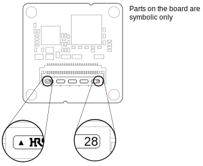

BCON for MIPI Interface Description#
General Information#
The Basler BCON for MIPI camera modules comply with the MIPI CSI-2 specification. For more information, visit www.mipi.org/specifications/csi-2.
Camera Connections#
BCON for MIPI cameras are interfaced to external circuitry via a 28-pin flat flex cable (FFC) connector. The connector allows camera integration into embedded systems with both FPGAs and SoCs (systems on a chip).
The connector provides connections for image transfer via a MIPI D-PHY interface, input and output signals, and power supply. Furthermore, standardized I²C lines are integrated, which are used for camera configuration.
FFC Connector#
The 28-pin connector on the camera is a flexible flat cable (FFC) connector by Hirose Electric Co. The connector provides connections for image transfer, input and output signals, and power supply. Standardized I²C lines are integrated, which are used for camera configuration via the Basler pylon Camera Software Suite.
The connector is specifically designed for shielded and impedance-controlled flexible flat cables. However, standard flexible flat cables without a ground layer can also be inserted. They will make good electrical contact, but you may notice a high rate of bit errors.
The connector order code is Hirose FH41-28S-0.5SH(05).
FFC Connector Pin Numbering and Assignments#
Pin 1 Position#
As shown below, pin 1 of the FFC connector is indicated by an arrow, and pin 28 is indicated by the number 28.

Pin Numbering and Assignments#
| Pin # (Camera Side) | Pin Name | Pin # (System Side) | Function |
|---|---|---|---|
| Ground contacts | - | - | GNDa |
| 1 | GND | 28 | Power Supplya |
| 2 | VCC | 27 | Power Supplyb |
| 3 | VCC | 26 | Power Supplyb |
| 4 | VCC | 25 | Power Supplyb |
| 5 | SYNC_OUT | 24 | Synchronization Outputc |
| 6 | FLASH | 23 | Flash Outputc |
| 7 | GND | 22 | GNDa |
| 8 | I2C_SDA | 21 | Configuration interfaced |
| 9 | I2C_SCL | 20 | Configuration Interfacee |
| 10 | GND | 19 | GNDa |
| 11 | SYNC_IN | 18 | Synchronization Inputf |
| 12 | - | 17 | Reserved |
| 13 | GND | 16 | GNDa |
| 14 | D1- | 15 | Data Outputg |
| 15 | D1+ | 14 | Data Outputg |
| 16 | GND | 13 | GNDa |
| 17 | D2- | 12 | Data Outputg |
| 18 | D2+ | 11 | Data Outputg |
| 19 | GND | 10 | GNDa |
| 20 | CLK- | 9 | Clock Outputg |
| 21 | CLK+ | 8 | Clock Outputg |
| 22 | GND | 7 | GNDa |
| 23 | D3- | 6 | Data Outputg |
| 24 | D3+ | 5 | Data Outputg |
| 25 | GND | 4 | GNDa |
| 26 | D4- | 3 | Data Outputg |
| 27 | D4+ | 2 | Data Outputg |
| 28 | GND | 1 | GNDa |
-
All GND pins, including the five shield GND contacts on the opposite side of the connector, must be connected to a common GND plane. Avoid long PCB traces, prefer direct vias.
-
Single camera supply voltage, 5 VDC nominal. Connect all pins.
-
SYNC_OUT can be used, e.g., to synchronize multiple cameras. FLASH can be used to control external flash lighting.
-
I²C interface data line. A pull-up resistor to 1.8 VDC is required on the system side. Refer to the I²C-bus Specification and User Manual (registration required) for the appropriate resistor value. Note that FFCs can have a significant line capacitance.
-
I²C interface clock line. A pull-up resistor to 1.8 VDC is required on the system side. Refer to the I²C-bus Specification and User Manual (registration required) for the appropriate resistor value. Note that FFCs can have a significant line capacitance.
-
SYNC_IN can be used to synchronize or trigger the camera.
-
MIPI D-PHY data lane negative/positive pin.
Electrical Requirements#
WARNING – Electric Shock Hazard
Unapproved power supplies may cause electric shock. Serious injury or death may occur.
- You must use power supplies that meet the Safety Extra Low Voltage (SELV) and Limited Power Source (LPS) requirements.
- If you use a powered hub or powered switch, they must meet the SELV and LPS requirements.
WARNING – Fire Hazard
Unapproved power supplies may cause fire and burns.
- You must use power supplies that meet the Limited Power Source (LPS) requirements.
- If you use a powered hub or powered switch, they must meet the LPS requirements.
NOTICE – Incorrect voltage can damage the camera module.
You must supply camera and I/O power within the safe operating voltage ranges specified below.
Absolute Maximum Ratings#
| Pin Name | Absolute Minimum | Absolute Maximum |
|---|---|---|
| VCC | -0.3 VDC | 6.0 VDC |
| I2C_SCL I2C_SDA | -0.3 VDC | 2.0 VDC |
| SYNC_IN | -0.3 VDC | 2.0 VDC |
Supply Current#
| Pin Name | Notes | Nominal (Recommended) | Maximum |
|---|---|---|---|
| VCC | Maximum power to be provided via the VCC pins is 2.5 W at 5 VDC nominal supply voltage. | Varies by camera module type | 0.5 A |
Input Voltages#
| Pin Name | Notes | Minimum | Nominal (Recommended) | Maximum |
|---|---|---|---|---|
| VCC | Recommended ramp up time: >1 ms Ripple: < 1% | 4.5 VDC | 5.0 VDC | 5.5 VDC |
| I2C_SCL I2C_SDA SYNC_IN | Input high voltage | 1.3 VDC | 1.8 VDC | 1.9 VDC |
| I2C_SCL I2C_SDA SYNC_IN | Input low voltage | 0.0 VDC | 0.0 VDC | 0.5 VDC |
Output Voltages#
| Pin Name | Notes | Minimum | Nominal (Recommended) | Maximum |
|---|---|---|---|---|
| SYNC_OUT FLASH | Output high voltage | 1.2 VDC | - | - |
| SYNC_OUT FLASH | Output low voltage | - | - | 0.5 VDC |
| VOD | MIPI clock and data lanes, HS Mode | 140 mV | - | 270 mV |
| VCMTX | MIPI clock and data lanes, HS Mode | 150 mV | - | 250 mV |
| VOL | MIPI clock and data lanes, LP Mode | -50 mV | - | 50 mV |
| VOH | MIPI clock and data lanes, LP Mode | 1.1 VDC | - | 1.3 VDC |
Timing Characteristics#
| Pin Name | Minimum | Maximum | Notes |
|---|---|---|---|
| SYNC_IN | 0 kHz | 100 kHz | - |
I²C Interface Specification#
The I²C interface follows the I²C-bus specification (registration required).
MIPI D-PHY Interface Specification#
The MIPI D-PHY clock and data lanes follow the MIPI D-PHY v1.0 specification.
D-PHY Trace Lengths and Delays#
The table below shows the traces lengths and approximated signal delays of the D-PHY interface on the camera module.
Info
Signal delay values were calculated assuming signal velocity of 6 ns/m.
| Signal Name | Trace Length [mm] | Signal Delay [ps] |
|---|---|---|
| CLK+ | 21.58 | 129 |
| CLK- | 21.60 | 130 |
| D1+ | 21.62 | 130 |
| D1- | 21.60 | 130 |
| D2+ | 21.56 | 129 |
| D2- | 21.60 | 130 |
| D3+ | 21.59 | 130 |
| D3- | 21.59 | 130 |
| D4+ | 21.63 | 130 |
| D4- | 21.59 | 130 |